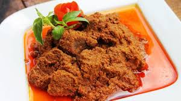

Seputar Rendang
Rendang
Rendang atau randang adalah masakan daging dengan bumbu rempah-rempah yang berasal dari Minangkabau. Masakan ini dihasilkan dari proses memasak yang dipanaskan berulang-ulang menggunakan santan sampai kuahnya kering sama sekali....
Baca selengkapnya >>>>>
TAJHIN PALAPPA
Bubur dengan bumbu kacang
Tajin Palappa. Memang sama sih sama bubur, tapi bedanya Tajin Palappa itu lebih khas, enak maknyus sangat, dan unik. Yah seperti artinya, Tajin Palappa yang berarti bubur bumbu ini bentuknya yah bubur, dengan kuah berupa bumbu pecel tapi lebih encer daripada bumbu pecel yang biasanya lebih kental bentuknya....
Baca selengkapnya >>>>>